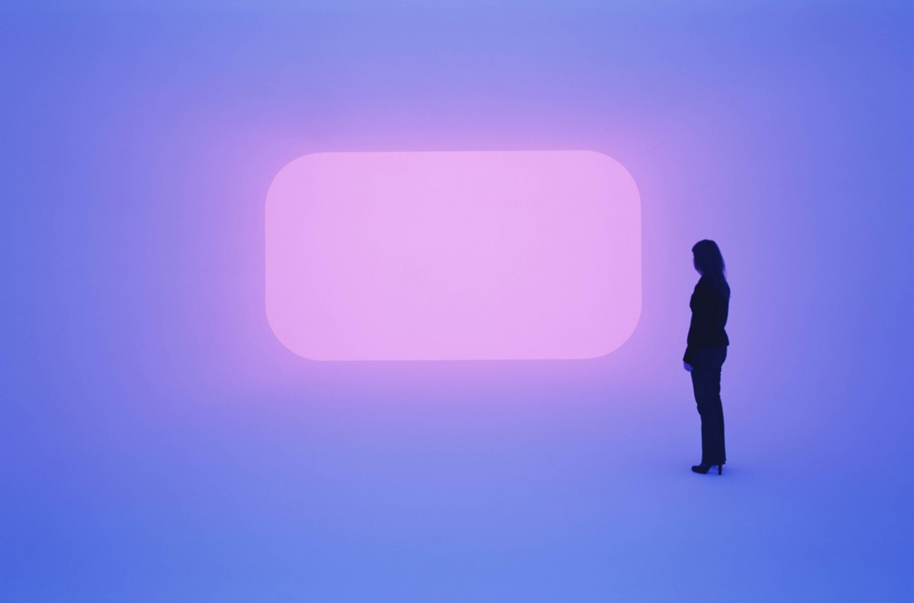
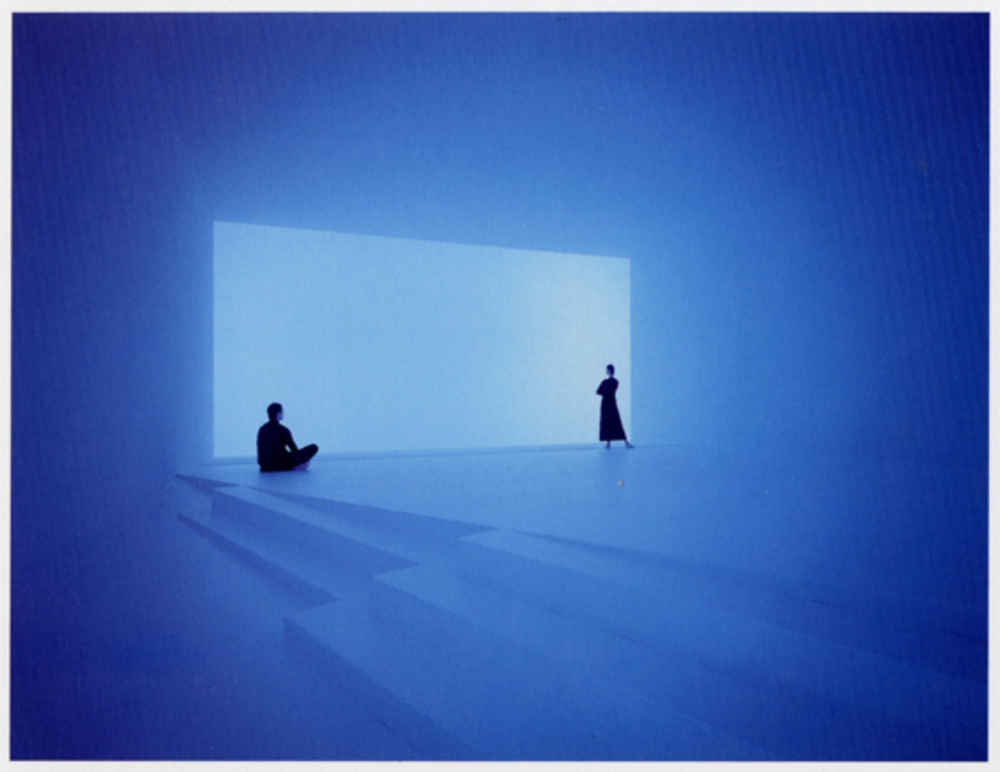
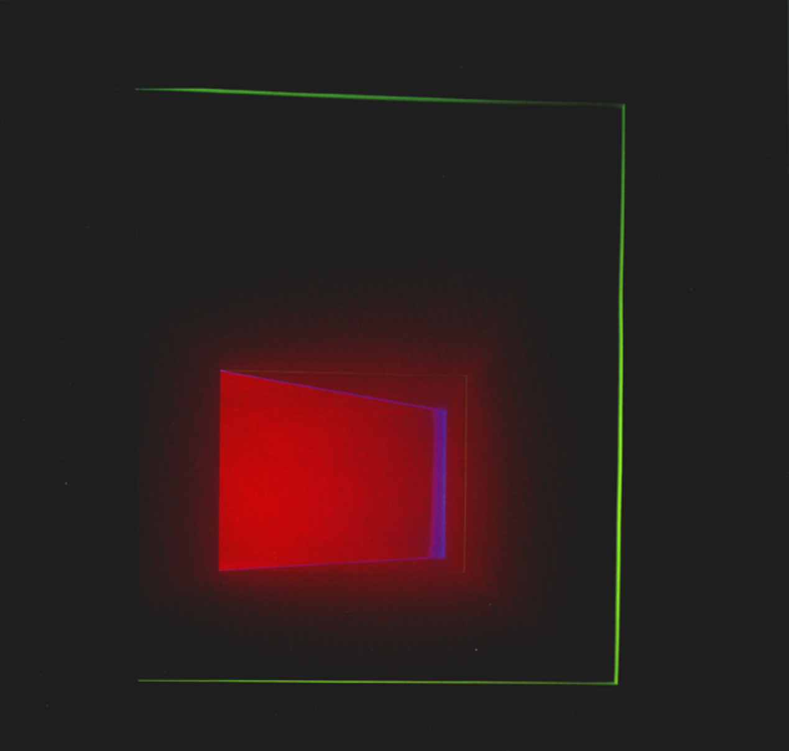
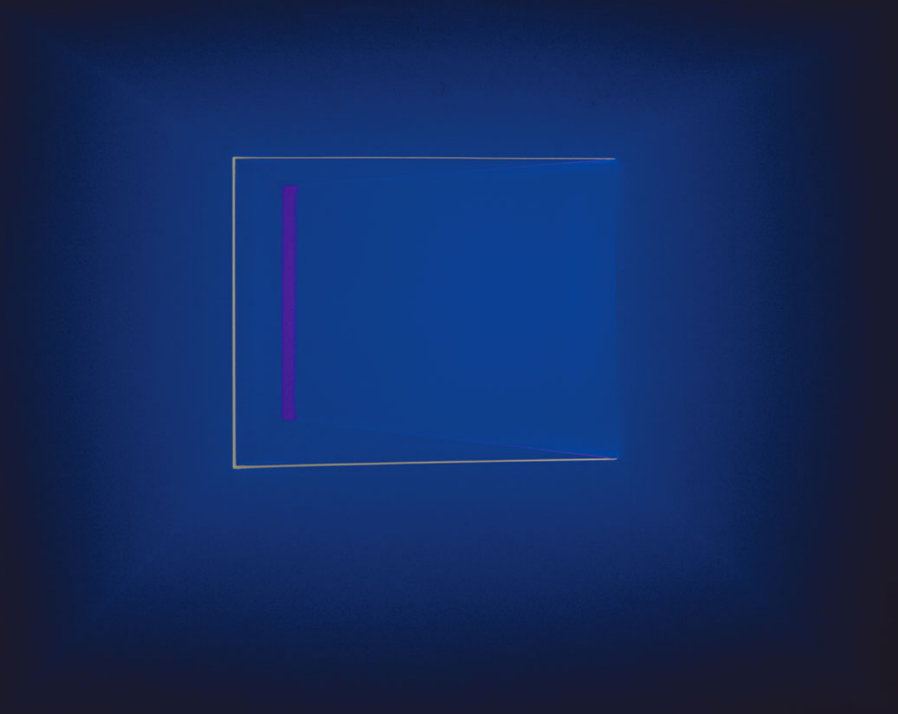

I recently viewed an online exhibition by James Turrell – GANZFELDS.
“Turrell creates a similar experience of “Ganzfeld”: a German word to describe the phenomenon of the total loss of depth perception as in the experience of a white-out “(Double Vision, 2021).

Figure 1 DHATU,2019
The Ganzfeld effect, also known as perceptual deprivation, "is a phenomenon of perception caused by exposure to an unstructured, uniform stimulation field."(Metzger,1930) In other words, when the human eyes looks at a poorly differentiated colour for an extended period, the eye becomes blinded for a short period or hallucination. This reminds me when I stare at a colour for a long time and turn to another, what my eyes perceive is a complex overlap of both colours instead of the inherent colour of the object. The illusion induced from Ganzfeld becomes a more complex scene. Turrell makes the most of this effect in his exhibition and clearly shows the relationship between light and space. In his work, however, the luminous body's presence is not felt, or rather the bright body is there, but it does not seem to be shining, presenting a diffuse and hazy sensation. It is evident in the work(see figure 1) that he handles the edges of the light sharply and neatly yet retains a misty softness both inside and out. I particularly like the colours in this exhibition; instead of stimulating the viewer's eyes with complex colours, he simply uses them to reflect the light as it is, with the colours softly against the light. I really like that he expresses the relationship between light and space by controlling the degree of the viewing angle, from which the visitors receive the light and the space. This shows that the space is another essential element in his work and the light acts as a shaper of the structure of the space, which is quite neat and interesting. As can be seen in his other series, the most difficult WEDGEWORKS, which he even introduces by saying that he "uses the projected light creates an illusion of walls or barriers."(Armana, 2021)

Figure 2 WIDE OUT, 1998
He not only brings an artistic expression of the relationship between light and space, but these lights are also visually pleasing and calming in an equal measure (see figure 2). Furthermore, his work also brings a wonder, as if the light shapes the space and, conversely, this light is shaped by the space. His works are good at turning things in the three-dimensional world into a two-dimensional presentation, and in some cases, using a two-dimensional light to shape a three-dimensional space. His control of light and choice of colours is also remarkable. His use of homochromatic light sources and complementary colours of light cannot be seen in his sensitivity to colour. He is able to find a balance between these colour blends, thus giving the viewer a sense of calm and enjoyment of colour, and even a sense of being surrounded by light and shadow. I think he has an incredible ability to make the viewer appreciate the fascinating nature of light in different situations.

Figure 3 CROSS CUT, 1998
Noteworthily, some of his combinations give an opposite sense of viewing. The colour palette in CROSS CUT (1998) (see figure 3) uses strong contrasting colours and the use of light breaks the balance and softness of the previous. It gives me a dark and eerie feeling and makes me want to escape from this claustrophobic space. And then there is his work ARMANA (2011) (see figure 4) where the sense of space is accentuated by a slight rawness and the saturated purple colour creates a sense of visual fatigue. Some say that the colours create a sense of futurism and that one can feel the strong mood swings in this conflict. This harmony and conflict are an expression of emotion and everyone's feelings change with it. I accept this difference in perception and I’m fully aware that different people will feel and experience the same thing differently.

Figure 4 ARMANA,2011
Before seeing this exhibition, I thought that the relationship between light and space on stage is essential and is one of the most critical stage styling elements. After seeing this exhibition, I realised that the relationship between the saturation of light and the handling of space on stage is also very important. The unlimited possibility of using light as a material that enables the audience to feel what they are feeling themselves is one of the ideas behind Turrell's creation, "My work is more about your seeing than it is about my seeing, although it is a product of my seeing."(Turrell, 2021). Turrell’s medium is pure light. He says, “My work has no object, no image and no focus. With no object, no image and no focus, what are you looking at? You are looking at you looking. What is important to me is to create an experience of wordless thought.”
Beyond that, I think Turrell uses a great medium, i.e., perception. In the same way, I believe that in theatre art, giving the audience a good perception is part of the success; the audience is not only the viewer, the listener, but more importantly, also the perceiver. When the performance and the audience's perception are perfectly aligned, the performance is half successful, because after all, all the stage is for the performance. Turrell’s exhibition has inspired me a lot, and hopefully in my future work I will be able to handle the relationship of light and space better.
Reference
Wolfgang Metzger, "Optische Untersuchungen am Ganzfeld." Psychologische Forschung 13 (1930) : 6-29. (the first psychophysiological study with regard to Ganzfelds)
Double Vision (2021). Available at: https://jamesturrell.com/work/type/ganzfeld/ (Accessed: 5 April 2021).
Ganzfeld effect - Wikipedia (2021). Available at: https://en.wikipedia.org/wiki/Ganzfeld_effect (Accessed: 5 April 2021).
Armana (2021). Available at: https://jamesturrell.com/work/type/wedgework/ (Accessed: 5 April 2021)